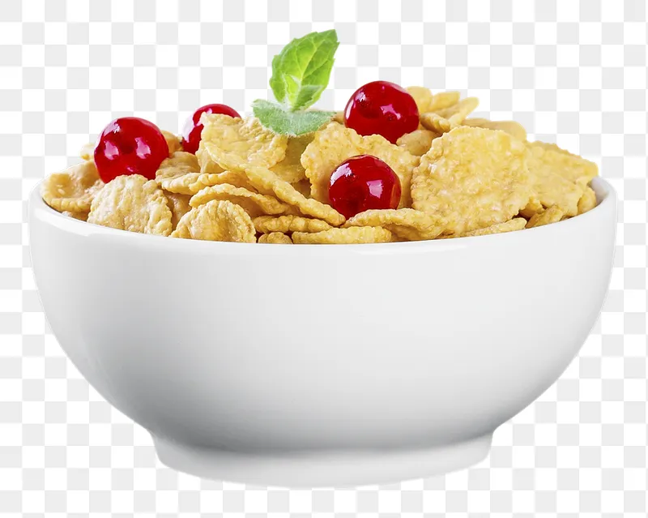

Pour desired cereal into bowl, amount up to preference.
If you wish to be health conscious, use serving size on box.
Note: Do not add too much, as the cereal will float in the milk.
Add desired amount of milk into bowl.
Personally, I recommennd to fill around half the bowl.
Serve with a spoon, and enjoy.
For added pzazz, top with fresh cut fruit.
